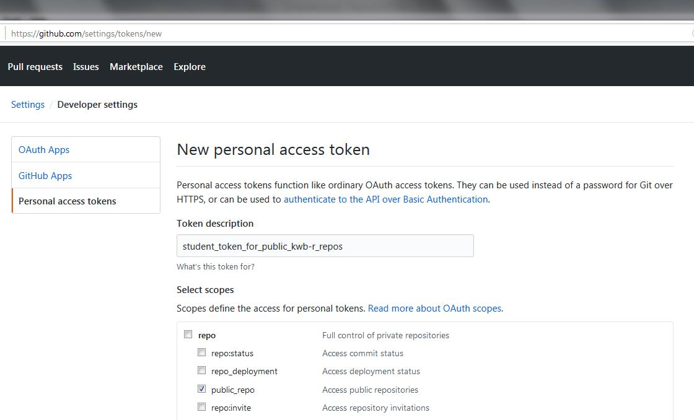
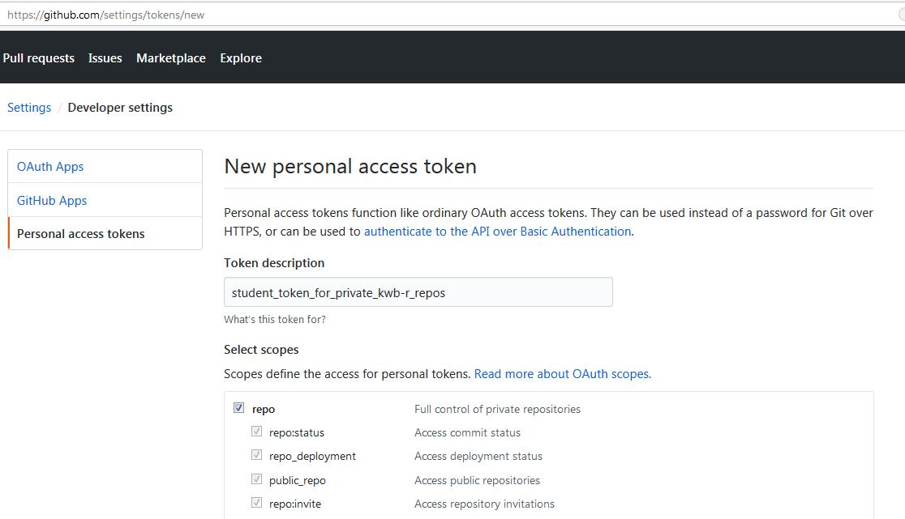
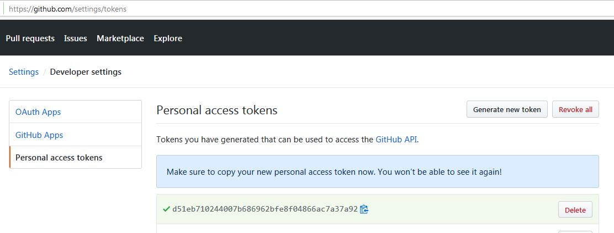

How to Install KWB-R Packages From GitHub
Michael Rustler
2026-05-07
Source:vignettes/install.Rmd
install.RmdIntroduction
At our research institute, the Kompetezzentrum Wasser Berlin gGmbH (KWB), we process data using the programming language R. We organise the program code in R packages. We publish these packages on GitHub in order
- to simplify the installation of our packages,
- to be visible to the research community,
- to have a place where to host package documentation pages,
- to be able to use issue tracking, e.g. for bug fixing,
- to be able to use services such as continuous integration.
Each R package is contained in its own GitHub repository. GitHub repositories are either
- public, i.e. accessible to everybody,
- private, i.e. accessible only to members of the KWB-R group.
We keep packages that may contain confidential information private and make all other packages public.
1 GitHub Personal Access Token (PAT)
In order
- not to be restricted in the number of accesses to the GitHub application programming interface (API) and
- to be able to access private GitHub repositories (see above),
it is required that, whenever a GitHub repository is accessed, a so called personal access token (PAT) is passed to GitHub. As its name indicates, the PAT is personal, i.e. it is explicitly assigned to one person.
You need to have a GitHub account and to be a member of the GitHub group KWB-R when you want to create a GitHub PAT for you or one of your students.
The following sections describe how to create, store and delete these Personal Acces Tokens.
1.1 Create GitHub PAT
Go to the following GitHub site to create a new personal access token (PAT):
https://github.com/settings/tokens/new
In case that only public KWB-R packages are to be accessed (see https://kwb-r.github.io/status for a list) you should create a PAT that is restricted to public repositories only. You do so by checking the box “public_repo” as shown below:

If access to private KWB-R packages is required as well, you need to create a token that provides access to private repositories. You do so by checking the box “repo” as shown below:

1.2 Store GitHub PAT in a Text File
Copy the GitHub PAT that is shown on the Web page (the string
starting with d51eb in the picture below)…

… and paste it into a text file, together with its
token_name. The content of the text file,
i.e. github_personal_access_tokens.txt may look like
this:
student_token_for_private_kwb-r_repos: d51eb...2 Installation
2.1 Set your GITHUB_PAT
If you have a GitHub Personal Access Token (GITHUB_PAT) please set it in your R(Studio) session as described below:
Sys.setenv(GITHUB_PAT = "mysecret_access_token")As we have a static IP address and GitHub API requests without
providing a valid GITHUB_PAT are limited to 60
requests per hour per IP address, you might get a error message
similar to the one below:
remotes::install_github("kwb-r/kwb.ogre")
>Rate limit remaining: 0/60
>Rate limit reset at: 2018-10-21 14:28:34 UTC
>To increase your GitHub API rate limit
>- Use `usethis::browse_github_pat()` to create a Personal Access Token.
>- Add `GITHUB_PAT` to your travis settings as an encrypted variable.
>Execution haltedIn addition if you require private and
public
KWB-R packages from GitHub but only provide a GITHUB_PAT
with access to public KWB-R packages you
might get a error message similar to the one below:
2.2 Dependency
Install the R Package remotes, which is required for
downloading and installing from GitHub:
#Sys.setenv(GITHUB_PAT = "mysecret_access_token")
install.packages("remotes", repos = "https://cloud.r-project.org")
remotes::install_github("r-lib/remotes@18c7302637053faf21c5b025e1e9243962db1bdc")2.3 KWB-R packages
Provide KWB-R packages to be installed:
###############################################################################
### Define Function for Installing KWB-R GitHub Packages
###############################################################################
install_kwb_github_packages <- function(pkgs_kwb,
dependencies = TRUE,
...) {
pkgs_kwb_github <- sprintf("KWB-R/%s", pkgs_kwb)
sapply(pkgs_kwb_github, FUN = function(gh_repo) {
try(remotes::install_github(repo = gh_repo,
dependencies = dependencies,
...)
)
})
}
###############################################################################
### Use the Install Function For KWB-R Packages for Project BaSaR
###############################################################################
#### These R package dependencies are needed by BaSaR project
#library(kwb.base)
#library(kwb.monitoring) # for configure, pathDictionary, ...
#library(lubridate) # for interval
#library(kwb.datetime) # for hsToPosix
#library(kwb.utils)
#library(kwb.event)
#library(kwb.ogre)
#library(RCurl)
### But only two R packages need to be specified (since these two have the
### missing KWB-R packages as dependencies, i.e. these will be installed
### automatically!
pkgs_kwb <- c("kwb.ogre", "kwb.monitoring")
install_kwb_github_packages(pkgs_kwb = pkgs_kwb)